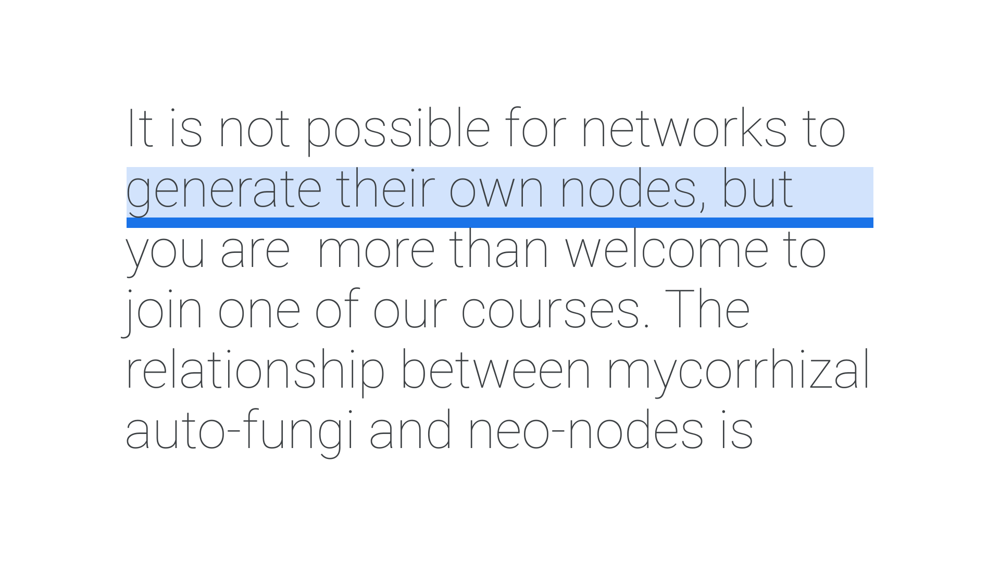

Line height & leading
By Google Fonts Knowledge contributors · Google Fonts Knowledge.
Original article · Source on GitHub · CC BY-SA 4.0. Text, illustrations and existing credits reproduced from the licensed Knowledge repository. Open Shelf adapted the layout and links; these adaptations are also CC BY-SA 4.0. No endorsement implied.
Line height is the vertical distance between two lines of type, measured from the baseline of one line of type to the baseline of the next. Traditionally, in metal type, this was the combined measurement of the font size and the strips of lead that were inserted between each row (called “leading”) of type.

Line height has a direct impact on the readability of text, so understanding it is one of the most fundamental typographic practices.
It’s possible to set the line height value in a number of units, as with font size, although those units could be different. For instance, we might set our font-size in pixels, but then declare the line height with a percentage value:
p {
font-size: 16px;
line height:150%; /* Equivalent to 24px */
}